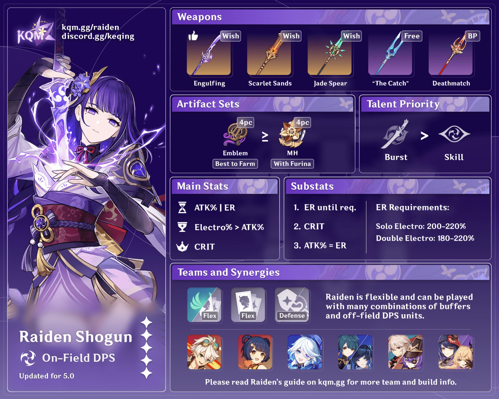
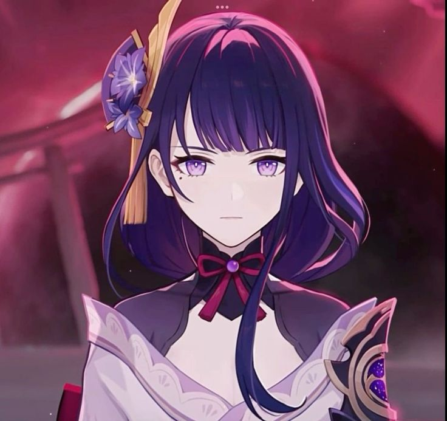
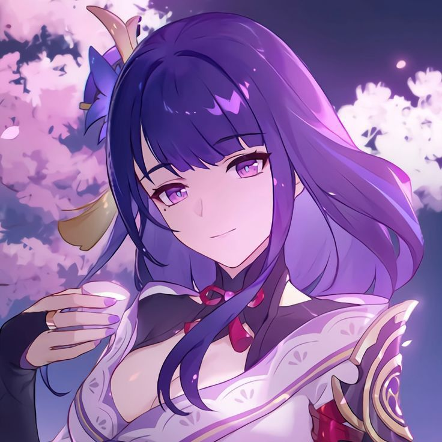
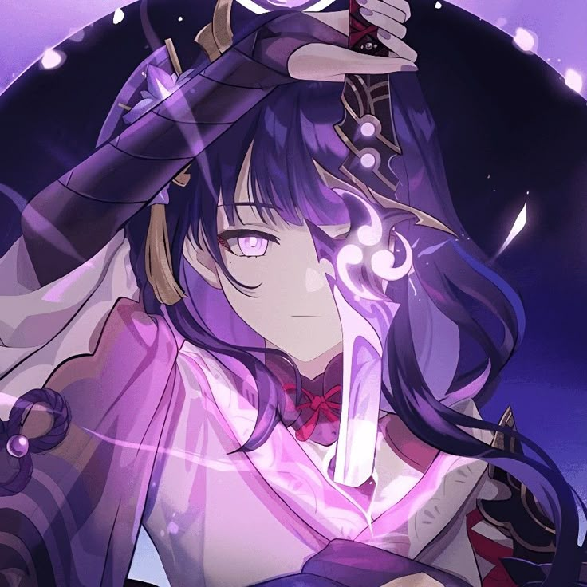
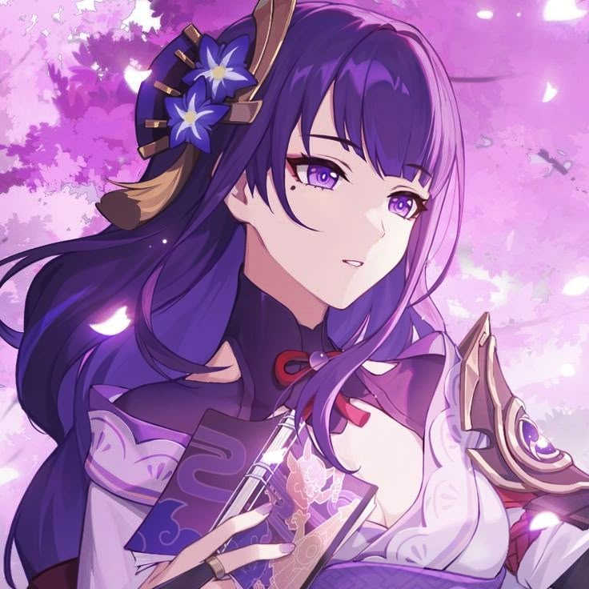
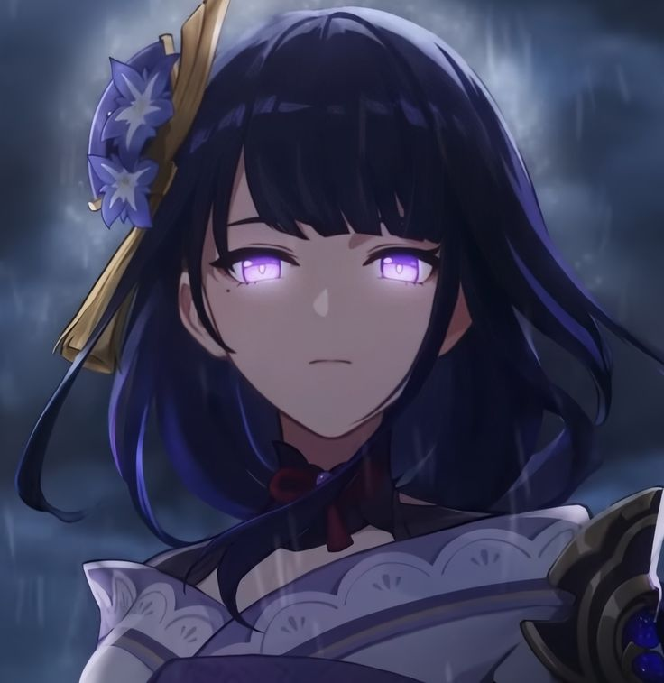
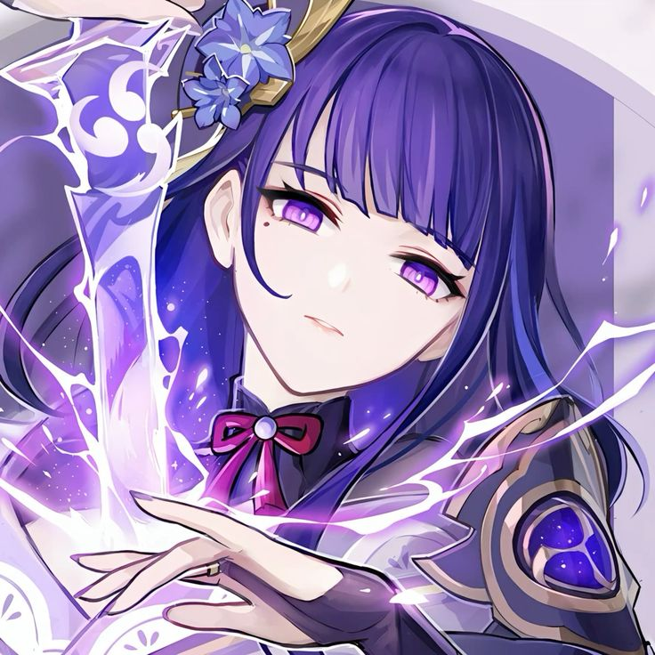
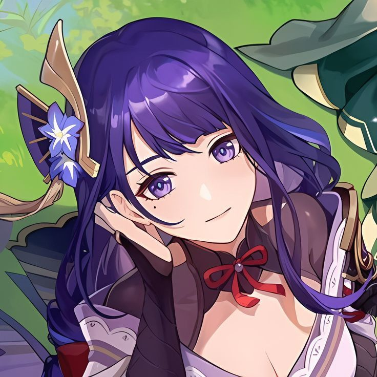
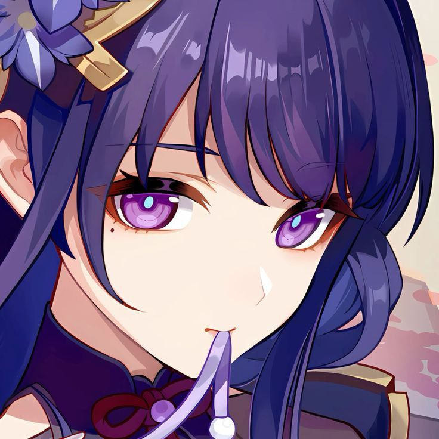

The Raiden Shogun (Japanese: 雷電将軍 Raiden Shougun) is a playable
Electro character in Genshin Impact. The Raiden Shogun is comprised of
two beings in one body: Ei, the current Electro Archon of Inazuma; and
the Shogun, the puppet created by Ei to act as the ruler of Inazuma in
her stead.
The Raiden Shogun is a firm believer of what she believes to be
eternity — a place in which everything is kept the same, regardless of
what goes on. She is honorable in her conduct and is revered by the
people of Inazuma. The Raiden Shogun exists in two forms — Ei, her
true identity, and the Shogun, a puppet created by Ei to oversee
Inazuma in her stead while she meditates in the Plane of Euthymia.
This puppet follows a set of directives programmed into her, which are
extremely difficult to modify. The Shogun is cold and stern in
personality, even callous at times; she is limited in emotional
expression, has no likes and dislikes, and has no need for recreation.
In none of her voice lines does she ever use contractions (eg. "it's",
"can't"). The Shogun thinks of herself as Ei's assistant and carries
out her creator's exact will, unable to act on her own volition. If
her usual functions are disabled, the Shogun becomes ineffectual. Due
to limited protocols as a result of Ei's initial indifference towards
anything other than "eternity", the puppet is able to be manipulated
by external influences. For example, the Kujou Clan and Fatui
persuaded her into initiating and maintaining the Vision Hunt Decree.
While Ei has a more stern demeanor than the average person, she is
notably more emotive and sociable than the Shogun. Unlike the Shogun,
Ei has preferences, such as a love for sweets and passion of martial
arts. Due to her dedication to eternity, Ei maintains a wary attitude
on the idea of change. However, she demonstrates curiosity rather than
disdain towards new affairs, such as the appearance of the Traveler
and the customs of the modern world. Due to having lost many of her
loved ones over the centuries, Ei is driven by a fear of further loss,
wanting to preserve Inazuma. To this end, she previously sealed
herself in the Plane of Euthymia to keep herself from the effects of
erosion. She created the puppet Shogun to ensure immunity from the
decay of her physical body. While in the Plane of Euthymia, Ei was
indifferent to anything that did not affect her pursuit of eternity
and had a low opinion of human ambition due to it resulting in loss
and suffering and therefore, making it incompatible with eternity.
While in the Plane of Euthymia, she was not unmoved by loneliness, as
Ei is shown enjoying Yae Miko and the Traveler's company. In spite of
her flawed actions, Ei is devoted to Inazuma, simply longing to
protect it and her people. After she is convinced that her actions
were destructive, Ei shows remorse and is willing to change her
perspective regarding eternity to become a better ruler. She also
gained a newfound respect for the idea of human ambition and its
achievements.









Character Demo - "Raiden Shogun: Nightmare" | Genshin Impact